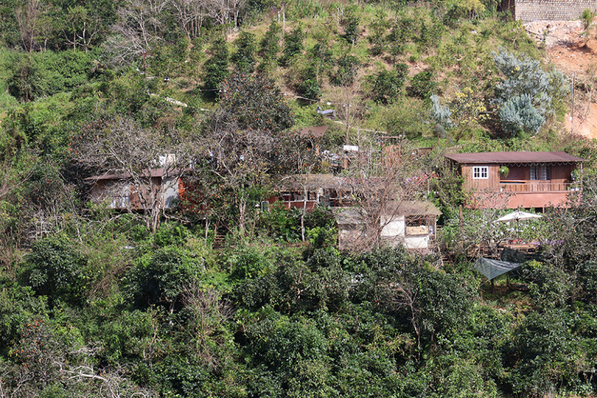

VƯỜN HỒNG - ĐỊA ĐIỂM DU LỊCH "XANH" TẠI ĐÀ LẠT
Đà Lạt - thành phố ngàn hoa, nơi có khí hậu mát mẻ quanh năm, được thiên nhiên ưu đãi với nhiều loài hoa và những khu vườn tuyệt đẹp, trong đó có cây hồng. Vườn hồng là một trong những điểm tham quan không thể bỏ qua khi đến Đà Lạt để thưởng thức những loại trái cây ngọt ngào, tuyệt vời.
Hoa dã quỳ bắt đầu nở báo hiệu mùa thu đã kết thúc, mùa đông đã về trên thành phố Đà Lạt, đó cũng là lúc những vườn hồng chín vàng phủ kín thành phố. Những vườn hồng ở đây được trồng tự nhiên, không có nhà kính. Tuy nhiên, vào mùa thu hoạch, chỉ cần bước chân vào vườn, bạn vẫn sẽ cảm nhận được mùi thơm của những trái hồng chín. Mùa hồng thường rơi vào cuối tháng 10, tháng 11. Vườn ươm hồng cho đến khi hồng chín vàng, chuyển sang màu vàng, rồi mới dùng quả để sản xuất hồng sấy khô. Hồng giòn được nhiều du khách ưa chuộng mua về làm quà cho gia đình, bạn bè vì quả ngọt, có mùi thơm dễ chịu.
Cảnh đẹp thanh bình của vườn hồng Đà Lạt
Từ trung tâm thành phố Đà Lạt, bạn có thể đi theo hướng đường Trần Hưng Đạo, qua đường Khe Sanh và đi đến cuối đèo Mimosa, bạn sẽ thấy những vườn hồng nằm rải rác hai bên đường. Du khách có thể chiêm ngưỡng những vườn hồng vào thời điểm đẹp nhất trong năm, đồng thời tận mắt chứng kiến quy trình làm hồng sấy gió.
Những ngày gần đây, vườn hoa Lê Vân trên đồi Mimosa thường xuyên đón đoàn du khách đến tham quan, chiêm ngưỡng những cây hồng chín vàng trĩu quả.